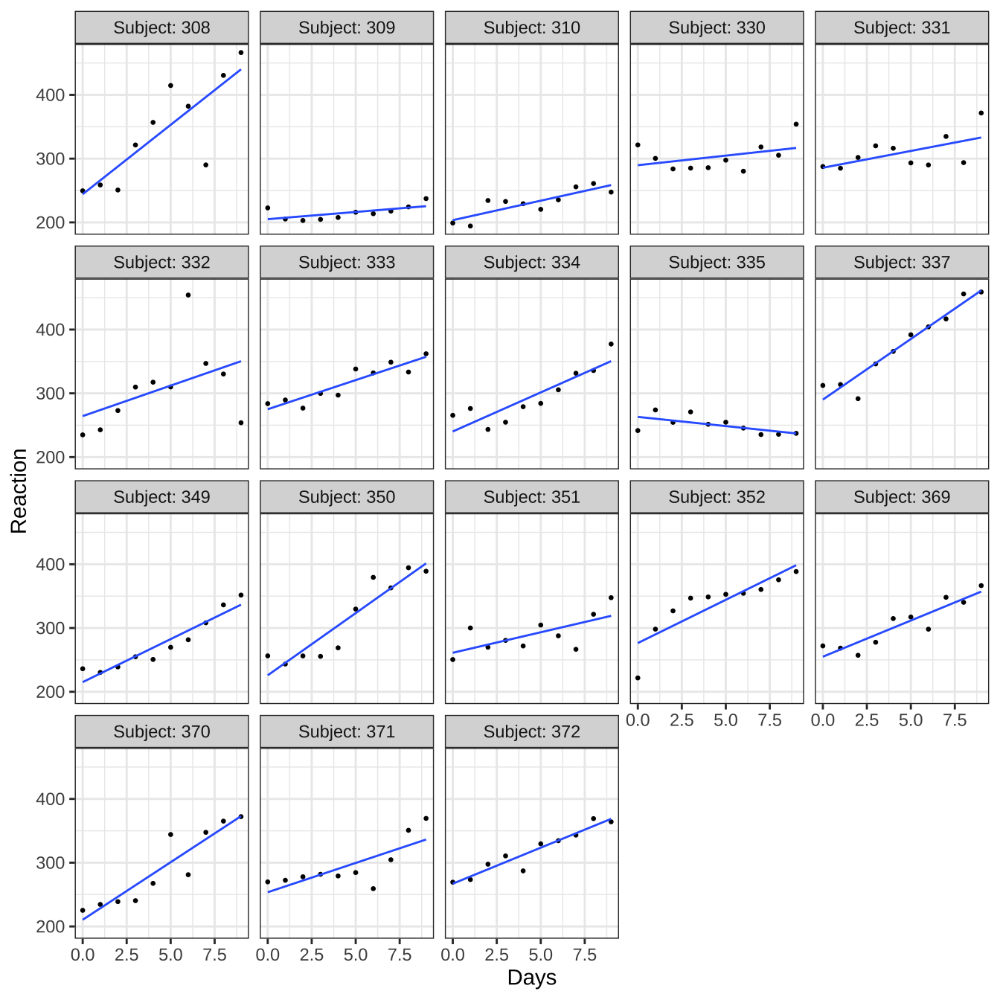
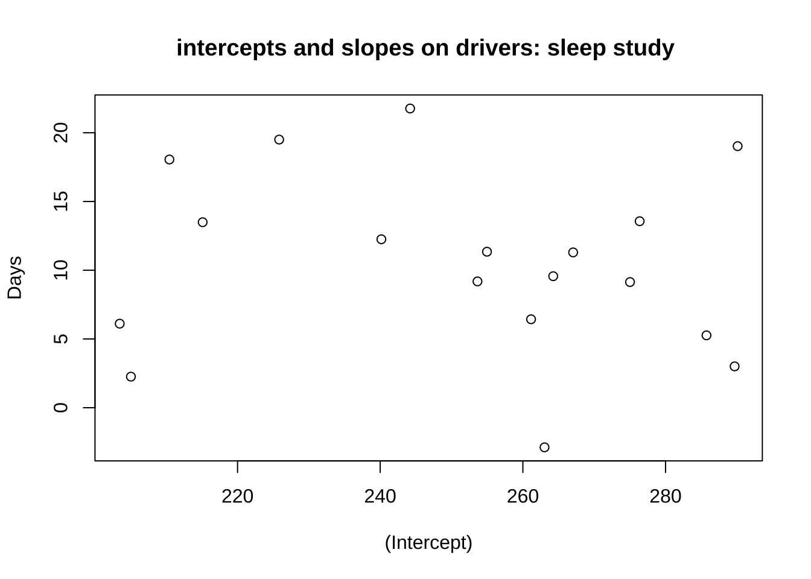

제 2 장 혼합모형
혼합모형(mixed effect model)은 proc glm에서 나타나는 모든 선형모형을 포함한 더욱 다양한 모형을 적합할 수 있다. 모수의 추정 방법은 최소제곱법이 아닌 최대가능도 추정법을 이용한다.
혼합모형에서 일반적인 모형의 정의는 다음과 같다.
\[\begin{equation} \bm y = \bm X \bm \beta + \bm Z \bm b + \bm e \tag{2.1} \end{equation}\]
위의 모형식에 대한 항들의 역할은 다음과 같다.
| 식의 요소 | 의미 | 이름 |
|---|---|---|
| \(\bm y\) | 반응변수 벡터 | response vector |
| \(\bm X\) | 고정효과에 대한 계획행렬 | design matrix for fixed effects |
| \(\bm \beta\) | 고정효과 벡터(모수) | fixed effect(parameters) |
| \(\bm Z\) | 임의효과에 대한 계획행렬 | design matrix for random effect |
| \(\bm b\) | 임의효과 벡터 | random effect |
| \(\bm e\) | 오차 벡터 | error vector |
혼합모형에서 임의효과 \(\bm b\) 와 오차항 \(\bm e\) 에 대한 분포 가정은 다음과 같다.
\[\begin{equation} \bm b \sim N( \bm 0, \bm G), \quad \bm e \sim N(\bm 0, \bm R) \tag{2.2} \end{equation}\]
또한 임의효과 \(\bm b\) 와 오차항 \(\bm e\) 은 서로 독립니다.
\[ Cov( \bm b, \bm e) = \bm 0 \]
모형이 식 (2.1) 인 경우 경우 관측벡터의 공분산의 다음과 같이 주어진다.
\[ Var( \bm y) = \bm Z^t \bm G \bm Z + \bm R \]
임의 효과 벡터 \(\bm b\)는 일반적으로 개체들이 깉은 그룹에 속하는 계층적인 효과를 반영하기 위하여 사용된다. 쯕, 같은 그룹이나 클러스터에 속하는 개체는 공통의 임의 효과를 공유하게 되어 서로 독립이 아니게 된다. 따라서 임의 효과 벡터 \(\bm b\)의 공분산 행렬 \(\bm G\)에서 개체들의 종속적인 구조를 나타낸다.
오차항에 대한 공분산 행렬 \(\bm R\)은 하나의 개체에서 관측되는 여러개의 관측값들이 독립이 아닌 경우 어떻게 연관되는 지를 나타낸다. 보통 오차들이 시간과 공간에 따라 나타날 수 있는 상관관계를 구조화하는 행렬이다.
오차항에 대한 공분산 행렬 \(\bm R\)은 \(\sigma^2 \bm I\)로 가정한는 경우가 많다. 일반적으로 오차항은 모두 독립이며 개체들의 종속성은 그 개체들이 속하는 그룹의 계층적인 구조에서 나온다고 가정한다. 특별하게 반복측정에서 오는 시계열적인 구조나 공간구조에 따르는 종속성이 나타나는 문제에서는 공분산 행렬 \(\bm R\)을 특수한 행렬로 보고 추정할 수 있다.
2.1 예제: 임의 계수 모형
library(lme4)## Loading required package: Matrix##
## Attaching package: 'Matrix'## The following objects are masked from 'package:tidyr':
##
## expand, pack, unpackstr(sleepstudy)## 'data.frame': 180 obs. of 3 variables:
## $ Reaction: num 250 259 251 321 357 ...
## $ Days : num 0 1 2 3 4 5 6 7 8 9 ...
## $ Subject : Factor w/ 18 levels "308","309","310",..: 1 1 1 1 1 1 1 1 1 1 ...head(sleepstudy,n=20)## Reaction Days Subject
## 1 249.5600 0 308
## 2 258.7047 1 308
## 3 250.8006 2 308
## 4 321.4398 3 308
## 5 356.8519 4 308
## 6 414.6901 5 308
## 7 382.2038 6 308
## 8 290.1486 7 308
## 9 430.5853 8 308
## 10 466.3535 9 308
## 11 222.7339 0 309
## 12 205.2658 1 309
## 13 202.9778 2 309
## 14 204.7070 3 309
## 15 207.7161 4 309
## 16 215.9618 5 309
## 17 213.6303 6 309
## 18 217.7272 7 309
## 19 224.2957 8 309
## 20 237.3142 9 309각 운전자에 대한 10일 간의 반응속도가 시간에 따라 어떻게 변하는 가를 알아보자. 전반적으로 시간이 지나면서 운전자들의 반응시간이 증가하고 있음을 알 수 있다. 또한 개인 별로 반응 시간의 변화와 패턴이 다르다는 것을 알 수 있다.
library(ggplot2)
ggplot(sleepstudy, aes(x=Days, y=Reaction)) +
geom_point(size=0.5) +
stat_smooth(method = "lm",se=F,size=0.5)+
facet_wrap("Subject", labeller = label_both)+
theme_bw()## `geom_smooth()` using formula 'y ~ x'
2.1.1 개체들의 선형 회귀모형
각 운전자 \(i\) 에 대하여 10일간 측정한 반응속도 \(y_{ij}\)를 시간에 대하여 선형모형으로 적합하면 개인별 회귀직선을 다음과 같이 표시할 수 있다.
\[\begin{equation} y_{ij} = \beta_{0i} + \beta_{1i} t_j + e_{ij},\quad i=1,2,\dots,18,\quad j=1,2,\dots,10 \tag{2.3} \end{equation}\]
여기서 오차항 \(e_{ij}\)은 서로 독립이며 \(N(0, \sigma^2_e)\)를 따른다고 가정한다.
행렬식으로는 다음과 같이 나타낼 수 있다.
\[ \bm y_i =\bm X_i \bm \beta_{i} +\bm e_i \]
여기서 \[ \bm y_i=\left[ \begin{array}{c} y_{i1} \\ y_{i2} \\ \vdots \\ y_{i,10} \end{array} \right],~ \bm X_i = \left[ \begin{array}{cc} 1 & 0 \\ 1 & 1 \\ \vdots & \vdots \\ 1 & 9 \end{array} \right], \bm \beta_i= \left[ \begin{array}{c} \beta_{0i} \\ \beta_{1i} \\ \end{array} \right], \bm e_i= \left[ \begin{array}{c} e_{i1} \\ e_{i2} \\ \vdots \\ e_{i,10} \end{array} \right] \]
위의 식에서 \(\beta_{0i}\)와 \(\beta_{1i}\)는 \(i\)번째 운전사의 반응속도를 설명내는 회귀직선의 절편과 기울기이다. 절편 \(\beta_{0i}\)는 실험 시작때 반응속도를 의미하고 기울기 \(\beta_{1i}\)는 실험이 진행되는 동안 반응속도가 어떻게 변하는 지 변화의 방향과 크기를 보여준다. 함수 를 아래와 같이 이용하면 식 (2.3) 을 각 운전사마다 적합시켜 각각의 절편과 기울기를 구할 수 있다.
lmf1 <- lmList(Reaction ~ Days | Subject, sleepstudy)
lmf1## Call: lmList(formula = Reaction ~ Days | Subject, data = sleepstudy)
## Coefficients:
## (Intercept) Days
## 308 244.1927 21.764702
## 309 205.0549 2.261785
## 310 203.4842 6.114899
## 330 289.6851 3.008073
## 331 285.7390 5.266019
## 332 264.2516 9.566768
## 333 275.0191 9.142045
## 334 240.1629 12.253141
## 335 263.0347 -2.881034
## 337 290.1041 19.025974
## 349 215.1118 13.493933
## 350 225.8346 19.504017
## 351 261.1470 6.433498
## 352 276.3721 13.566549
## 369 254.9681 11.348109
## 370 210.4491 18.056151
## 371 253.6360 9.188445
## 372 267.0448 11.298073
##
## Degrees of freedom: 180 total; 144 residual
## Residual standard error: 25.59182cor(coef(lmf1))## (Intercept) Days
## (Intercept) 1.0000000 -0.1375534
## Days -0.1375534 1.0000000plot(coef(lmf1),main="intercepts and slopes on drivers: sleep study ")
18개의 절편과 기울기는 큰 상관관계는 없는것으로 보이지만 약한 음의 상관계수가 나타났다.
절편과 기울기에 대한 분포를 보기 위하여 상자그림을 그려보면 평균을 중심으로 대칭인 분포를 보이고 있다.
boxplot(coef(lmf1)[1])
boxplot(coef(lmf1)[2])이제 각 운전사에 대하여 회귀식을 따로 적합하지 않고 전체 운전사들의 자료를 모두 합쳐서 하나의 회귀식을 고려할 수 있다. 개체의 특성을 반영하는 모형이 아닌 전체 집단에 대한 평균적인 모형(population model)을 고려하는 것이다.
\[\begin{equation} y_{ij} = \beta_0 + \beta_1 t_j + e_{ij} ,\quad i=1,2\dots,18, j=1,2, \dots, 10 \tag{2.4} \end{equation}\]
여기서 오차항은 서로 독립이며 \(N(0, \sigma^2_e)\)를 따른다고 가정한다.
위와 같은 전체 운전사 집단의 관측값을 운전자의 특성을 고려하지 않고 세운 모형으로서 시간에 따른 반응시간에 대한 모집단의 전체적인 평균적 함수 관계를 파악하는 모형이라고 할 수 있다.
lmpop <- lm(Reaction ~ Days, sleepstudy)
summary(lmpop)##
## Call:
## lm(formula = Reaction ~ Days, data = sleepstudy)
##
## Residuals:
## Min 1Q Median 3Q Max
## -110.848 -27.483 1.546 26.142 139.953
##
## Coefficients:
## Estimate Std. Error t value Pr(>|t|)
## (Intercept) 251.405 6.610 38.033 < 2e-16 ***
## Days 10.467 1.238 8.454 9.89e-15 ***
## ---
## Signif. codes: 0 '***' 0.001 '**' 0.01 '*' 0.05 '.' 0.1 ' ' 1
##
## Residual standard error: 47.71 on 178 degrees of freedom
## Multiple R-squared: 0.2865, Adjusted R-squared: 0.2825
## F-statistic: 71.46 on 1 and 178 DF, p-value: 9.894e-15with(sleepstudy, plot(Days, Reaction,main="Population and individual regression lines"))
abline(a=coef(lmpop)[1], b=coef(lmpop)[2],lwd=3)
for ( i in 1:18 ) {
xx <- as.numeric(coef(lmf1)[i,])
abline(a=xx[1],b=xx[2], lty=2)
}
이제 각 운전사에 대하여 개체별로 적합한 회귀식의 계수들\((\hat \beta_{0i}, \hat \beta_{1i})\) 와 전체집단에 적한한 회귀식의 계수 \((\hat \beta_{0}, \hat \beta_{1})\)의 관계를 보면 개체별로 회귀 계수들의 평균이 전체에 적용한 모형의 계수와 매우 가까운 사실을 알 수 있다.
apply(coef(lmf1),2,mean)## (Intercept) Days
## 251.40510 10.46729coef(lmpop)## (Intercept) Days
## 251.40510 10.467292.1.2 임의 계수 모형
앞 절의 모형과 분석에서 알 수 있듯이 한 개체에 대하여 여러 개의 관측값을 측정한 자료에 회귀방정식을 각각 적합시켜보고 또한 개체의 특성을 고려하지않은 전체 모형을 적합해보면 다음과 같은 두 가지 결과를 볼 수 있다.
- 각 개체별 회귀식은 개인의 특성을 반영한다. 즉, 개체에 따라 시간에 따른 반응시간의 변화가 다르게 나타난다.
- 하지만 개인별로 볼 때도 전체적으로는 시간에 따라서 반응시간이 증가하는 경향이 있음을 알 수 있다.
- 전체 자료에 적합한 모형을 보면 개인별로 적합한 모형의 공통적인 성격, 즉 시간에 따른 반응시간의 증가를 알 수 있다.
- 이러한 결과를 보고 각 개인의 변화는 전체적인 변화를 따르면서 각 개인의 특성이 반영되었다고 가정할 수 있다.
위에서 논의하였듯이 전체적인 경향과 게인의 특성을 동시에 고려할 수 있는 모형이 생각할 수 있고 이러한 모형이 다음과 같은 모형이다.
\[\begin{equation} y_{ij} = (\beta_0 + b_{0i}) + (\beta_1 + b_{1i}) t_j + e_{ij} \tag{2.5} \end{equation}\]
모형 $ref(eq:repeat) 는 절편과 기울기가 두 개의 구성 요소로 더해져서 표현된다.기울기는 \(\beta_1+b_{1i}\)로서 나타내어지며 \(\beta_1\)은 모집단이 가지는 공통적인 경향을 반영하는 모수이고 \(b_{1i}\)는 \(i\) 번째 개체의 특성을 반영한 확률변수이다. 절편도 유사한 형식으로 구성된다. 각 개인에 대한 특성을 나타내는 변수 \((b_{0i}, b_{1i})\) 을 확률변수로 설정하고 이를 모수(\(\beta_0, \beta_1)\) (parameter or fixed effect)와 구별하여 임의효과(random effect)라고 한다.
위와 같이 선형모형의 계수에 각 개체에 대한 임의효과가 포함된 모형을 특별하게 임의 계수 모형(random coefficient model) 이라고 부른다.
18명에 대한 회귀직선의 절편과 기울기를 보면 개인의 차이에 따른 변동을 볼 수 있으며 이러한 각 개인간의 변동을 임의효과 를 이용하여 다음과 같은 모형을 생각해보자.
\[ \bm \beta_i= \left[ \begin{array}{c} \beta_{0} \\ \beta_{1} \\ \end{array} \right] +\left[ \begin{array}{c} b_{0i} \\ b_{1i} \\ \end{array} \right] , \quad \left[ \begin{array}{c} b_{0i} \\ b_{1i} \\ \end{array} \right] \sim N \left ( \left[ \begin{array}{c} 0 \\ 0 \\ \end{array} \right] , \left[ \begin{array}{cc} \sigma^2_{b1} & \rho \sigma_{b1} \sigma_{b2}\\ \rho \sigma_{b1} \sigma_{b2} & \sigma^2_{b2} \\ \end{array} \right] \right ) \]
위의 모형은 각 개인의 회귀직선에서 각 절편과 기울기가 전체평균 \(\beta_0\)와 \(\beta_1\)를 따르며 각 개인의 차이는 전체평균에 임의효과인 \(b_{0i}\)와 \(b_{1i}\)가 더해져서 나타난다는 것을 의미한다. 이변량 임의효과 \(b_{0i}\)와 \(b_{1i}\)는 이변량 정규분포를 따르며 각각의 분산과 상관계수가 \(\sigma^2_{b1}\), \(\sigma^2_{b2}\), \(\rho\)이다.
다른 개체에 대한 임의효과는 서로 독립이며 임의 효과와 오차항은 독립이다. 여기서 오차항은 서로 독립이며 \(N(0, \sigma^2_e)\)를 따른다고 가정한다.
\[ Cov(\bm b_{i}, \bm b_{j}) =\bm 0 \text{ when } i \ne j,\quad Cov(\bm b_{i}, e_{jk}) =\bm 0 \text{ for all } i,j,k \]
위와 같은 혼합효과모형(mixed effects model)을 각 개인 \(i\)에 대하여 행렬식으로 표시하면 다음과 같다.
\[\begin{equation} \bm y_i = \bm X_i \bm \beta + \bm Z_i \bm b_i + \bm e_i \tag{2.6} \end{equation}\]
여기서
\[ \bm y_i=\left[ \begin{array}{c} y_{i1} \\ y_{i2} \\ \vdots \\ y_{i,10} \end{array} \right],~\bm X_i = \left[ \begin{array}{cc} 1 & 0 \\ 1 & 1 \\ \vdots & \vdots \\ 1 & 9 \end{array} \right], \bm \beta= \left[ \begin{array}{c} \beta_{0} \\ \beta_{1} \\ \end{array} \right], ~\bm Z_i = \left[ \begin{array}{cc} 1 & 0 \\ 1 & 1 \\ \vdots & \vdots \\ 1 & 9 \end{array} \right],~ \bm b_i = \left[ \begin{array}{c} b_{0i} \\ b_{1i} \\ \end{array} \right],~ \bm e_i= \left[ \begin{array}{c} e_{i1} \\ e_{i2} \\ \vdots \\ e_{i,10} \end{array} \right] \]
그리고 각 개인에 대한 임의 효과 \(\bm b_i\)와 오차항 벡터 \(\bm e_i\)의 공분산행렬은 다음과 같다
\[ Cov(\bm b_i) = \bm \Sigma = \begin{bmatrix} \sigma^2_{b1} & \rho \sigma_{b1} \sigma_{b2}\\ \rho \sigma_{b1} \sigma_{b2} & \sigma^2_{b2} \end{bmatrix}, \quad Cov(\bm e_i) = \sigma-e^2 \bm I \]
위의 각 개인에 대한 모형 (2.6) 을 모두 합쳐서 하나의 혼합효과모형 으로 나타내면 식 (2.1) 과 같이 다음과 같이 표현할 수 있다.
\[\begin{equation*} \bm y = \bm X \bm \beta + \bm Z \bm b + \bm e \end{equation*}\]
여기서
\[ \bm y=\left[ \begin{array}{c} \bm y_{1} \\ \bm y_{2} \\ \vdots \\ \bm y_{18} \end{array} \right],~\bm X = \left[ \begin{array}{c} \bm X_1 \\ \bm X_2 \\ \vdots \\ \bm X_{18} \end{array} \right] ~ \bm e = \left[ \begin{array}{c} \bm e_1 \\ \bm e_2 \\ \vdots \\ \bm e_{18} \end{array} \right] \]
임의효과 벡터 \(\bm b\)는 각 개인에 대한 임의효과벡터 \(\bm b_i\)를 행으로 쌓아놓은것과 같고 임의효과에 대한 계획행렬 \(\bm Z\)는 각 개인의 계획행렬 \(\bm Z_i\)를 대각원소로 같은 행렬이다.
\[ \bm b=\left[ \begin{array}{c} \bm b_{1} \\ \bm b_{2} \\ \vdots \\ \bm b_{18} \end{array} \right],~\bm Z = \left[ \begin{array}{cccc} \bm Z_1 & 0 & \dots & 0 \\ 0 & \bm Z_2 & \dots & 0 \\ \vdots & \vdots & \vdots & \vdots \\ 0 & 0 & \dots & \bm Z_{18} \end{array} \right] \]
또한 임의효과 벡터 \(\bm b\) 와 오차항 벡터 \(\bm e\)의 공분산행렬은 다음과 같다.
\[ Cov(\bm b) = \bm G = \begin{bmatrix} \bm \Sigma & 0 & \dots & 0 \\ 0 & \bm \Sigma & \dots & 0 \\ \vdots & \vdots & \vdots & \vdots \\ 0 & 0 & \dots & \bm \Sigma \end{bmatrix}, \quad Cov(\bm e) = \bm R = \sigma_e^2 \bm I \]
혼합모형 @ref{eq:mixed)를 함수를 이용하여 적합시켜보자. 모형에서 (1 + Days|Subject) 이 개체에 대하여 절편과 기울기에 대한 임의효과를 지정한다.
fm1 <- lmer(Reaction ~ 1 + Days + (1 + Days|Subject), sleepstudy)
summary(fm1)## Linear mixed model fit by REML ['lmerMod']
## Formula: Reaction ~ 1 + Days + (1 + Days | Subject)
## Data: sleepstudy
##
## REML criterion at convergence: 1743.6
##
## Scaled residuals:
## Min 1Q Median 3Q Max
## -3.9536 -0.4634 0.0231 0.4634 5.1793
##
## Random effects:
## Groups Name Variance Std.Dev. Corr
## Subject (Intercept) 612.10 24.741
## Days 35.07 5.922 0.07
## Residual 654.94 25.592
## Number of obs: 180, groups: Subject, 18
##
## Fixed effects:
## Estimate Std. Error t value
## (Intercept) 251.405 6.825 36.838
## Days 10.467 1.546 6.771
##
## Correlation of Fixed Effects:
## (Intr)
## Days -0.1382.2 SAS의 proc mixed
SAS에서 혼합모형을 적함시키는 방법은 여러 가지 있지만 대표적인 방법이
proc mixed를 사용하는 것이다.
다시 앞에서 본 반복큭정에 대한 모형식 (1.1)를 고려하자.
\[ y_{ijk} = \mu + \alpha_i + \beta_{ij} + \gamma_k + \delta_{ik} + e_{ijk} \]
위의 모형은 proc mixed를 이용하여 다음과 같이 적합시킬 수 있다.
proc mixed data=bp;
class trt time id;
model bp = trt time trt*time;
repeated / type=cs sub=id;
run;위의 proc mixed 프로그램은 proc glm의 문법과 매우 동일하지만 repeated 문장에서 효과를 주지 않고 option으로 오차항의 공분산 행렬 \(R\) 의 형태를 지정하는 type=cs 사용한다. 또한 반복측정하는 개체(subject)의 단위를 sub=id 로 지정한다.
proc mixed 의 repeated 를 사용하면 개체 내의 자료에 대한 다양한 형태의 공분산 \(\bm R\) 을 지정할 수 있다. 다양한 공분산의 형태는 SAS 매뉴얼 에 나와 있다.
위에서 지정한 오차항의 공분산 행렬 \(R\) 의 형태는 compound symmetry(cs)이며 이는 개체 내의 반복측정한 반응값이 같은 공분산을 가지는 형태이다. 이러한 모형은 proc mixed 에서 다음과 같이 random 문장을 사용하여 동일하게 지정할 수 있다.
proc mixed data=bp ;
class trt time id;
model bp=trt time trt*time / ddfm=kr;
random int / sub=id;
run;위에서 random 문장은 혼함모형 식 (2.1)에서 절편(intercent)에 각 개체의 임의효과를 더한 모형이며 이는 반복 츧정에 대한 선형모형식
@ref{eq:repeatmodel0}에서 개체의 효과 \(\beta_{ij}\)를 임의효과로 보는 모형이다. 앞에서 논의한 임의게수 모형에서 절편에만 임의효과가 있는 모형과 유사하다.
이렇게 모형식 @ref{eq:repeatmodel0}에서 절편에만 임의효과가 있고 오차항이 독립인 모형은 모형식 @ref{eq:repeatmodel0}에서 모든 모수를 고정효과로 보고 개체안의 오차항에 대한 공분산이 compound symmetry 라고 가정하는 모형과 주변 분포가 동일하다.
따라서 위의 두 개 의 SAS의 가설 검정 결과는 같다. 더 나아가 proc glm을 이용항 결과와도 동일하다.